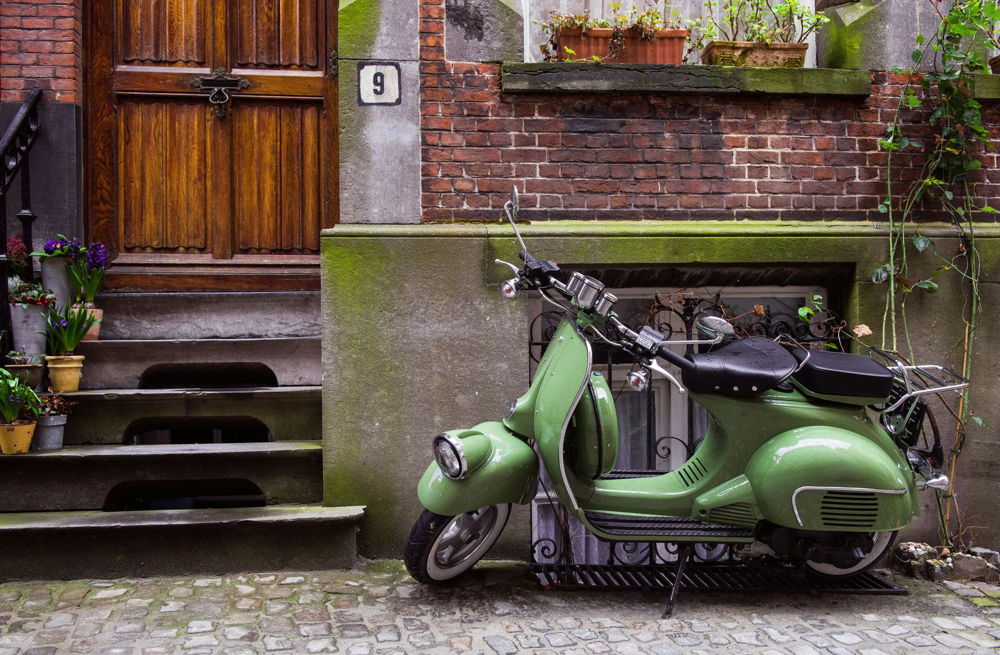

The Vespa, an Italian symbol of style and freedom, was born in the post-war period and continues to inspire today.
La Vespa, simbolo italiano di stile e libertà, è nata nel dopoguerra e continua a ispirare oggi.
Quando pensiamo all'italianità, la Vespa spicca come simbolo indiscusso di stile, ingegno e gusto italiano. Più che un semplice mezzo di trasporto, la Vespa rappresenta uno stile di vita leggero e affascinante, evocando immagini della Dolce Vita e dell'ottimismo del dopoguerra in Italia.
La storia della Vespa inizia con Rinaldo Piaggio, che nel 1884 trasforma la sua attività da arredatore di navi di lusso a produttore di treni e aerei. Tuttavia, è con l'ingegnere Corradino D'Ascanio che la Vespa prende forma. Pensata per essere accessibile e pratica, la Vespa è progettata in modo che anche le donne in gonna possano guidarla comodamente, lanciandola sul mercato nel 1946 con un design rivoluzionario e un logo rinnovato.

Rapidamente, la Vespa diventa un'icona di emancipazione e progresso. Le sue pubblicità hanno come target un pubblico femminile, mostrando donne in tailleur che vanno al lavoro in Vespa, simbolo di una società in rinascita e modernità. Con il boom economico, la Vespa si adatta alle esigenze dei giovani, creando modelli come la Vespa 50 e la 125 Primavera, che diventano veri e propri oggetti di culto.
Negli anni, la Vespa ha mantenuto il suo fascino, adattandosi alle nuove esigenze con modelli dotati di frecce, specchietti e accensione elettrica. Oggi, la Vespa non è solo un ricordo del passato, ma continua a essere un simbolo di libertà e scoperta, adorata da viaggiatori e avventurieri in tutto il mondo.

La Vespa ha anche collaborato con grandi nomi della moda e dell'arte, confermando il suo status di icona di stile e design. Con modelli speciali come la Vespa 946 Christian Dior e la Vespa 946 Emporio Armani, dimostra come un mezzo di trasporto possa diventare una tela per l'espressione creativa e il lusso.
fonte: VESPA: UN MONDO SU DUE RUOTE
Parole Chiave
| Vespa | Un tipo di motocicletta molto famosa in Italia. |
| Mezzo di trasporto | Un oggetto usato per spostarsi da un luogo all'altro, come una bicicletta o una macchina. |
| Italianità | Le caratteristiche tipiche dell'Italia e degli italiani. |
| Dopoguerra | Il periodo dopo la fine di una guerra. |
| Museo | Un luogo dove si possono vedere opere d'arte, oggetti storici, o altre cose importanti. |
| Ingegnere | Una persona che progetta e costruisce macchine, strade, ponti, ecc. |
| Arredatore | Una persona che decora e arreda gli interni, come le case o le navi. |
| Elicottero | Un tipo di aereo che può decollare e atterrare verticalmente. |
| Scooter | Un piccolo veicolo a due ruote con un motore. |
| Libertà | La possibilità di fare quello che si vuole, senza restrizioni. |
| Nostalgia | Sentire tristezza pensando a tempi felici nel passato. |
| Stile | Un modo particolare e unico di fare o presentare qualcosa. |
| Emancipazione | Ottenere libertà e diritti uguali, specialmente in società dove non c'erano prima. |
| Progresso | Migliorare, svilupparsi, andare avanti. |
| Pubblicità | Messaggi e immagini creati per convincere le persone a comprare o fare qualcosa. |
Esercizio
Domande
- Che cosa simboleggia la Vespa in Italia?
- In che anno è stata lanciata la Vespa sul mercato?
- Perché la Vespa è considerata pratica per le donne?
- Quali sono alcuni dei modelli speciali di Vespa menzionati nel testo?
- Cosa rappresenta la Vespa oggi?